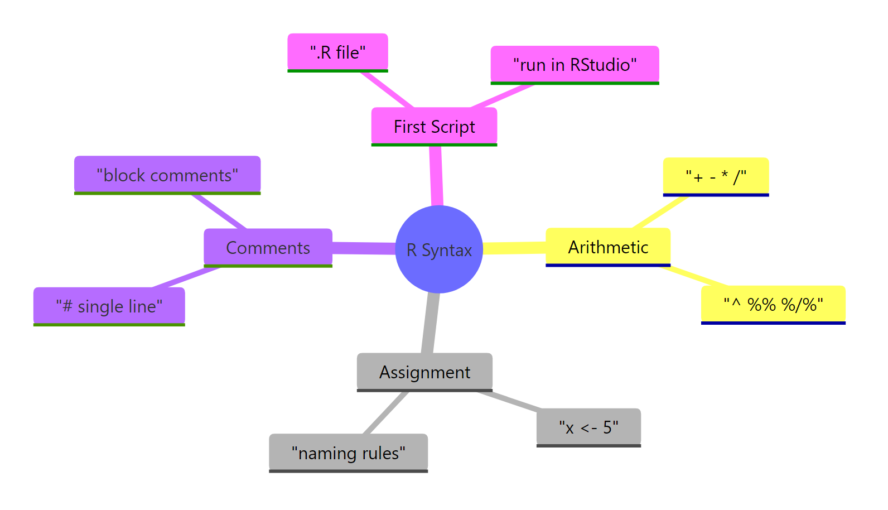
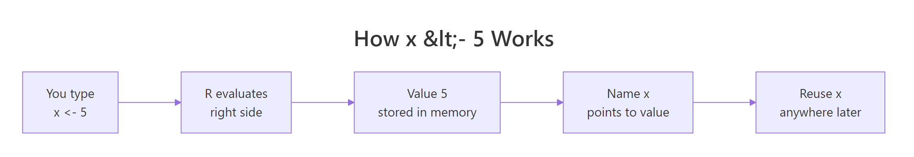

R Syntax 101: Write Your First Working Script in 10 Minutes
R's syntax is the small set of rules that lets you do arithmetic, store values with <-, write # comments, and save it all as a .R script. Master these four pieces and you can write real R code today.
Introduction
If you can type 2 + 2 into a box and read the answer, you already understand the shape of an R script. Everything advanced you will meet later — statistical models, dplyr pipelines, ggplot2 charts — is built on four small primitives you will learn in the next ten minutes.
This tutorial walks you through those four primitives: arithmetic operators, variable assignment with <-, comments with #, and putting the whole thing in a runnable script. Every rule below comes with a live example you can edit and re-run on this page.

Figure 1: The four building blocks of R syntax covered in this tutorial.
How do you do arithmetic in R?
Think of R's console as a calculator that also remembers things. Type any expression, press Enter, and R prints the answer. Here are the six arithmetic operators you will use almost every day.
Each line is a stand-alone expression. R evaluates it, shows the result preceded by [1] (which just means "element 1 of the output"), and moves to the next line. Notice %% and %/% — the first gives you the leftover, the second gives you the whole-number quotient. Together they answer "how many whole threes fit in ten, and how much is left over?"
R also respects operator precedence, the same PEMDAS order you learned in school: parentheses first, then exponents, then multiplication and division, then addition and subtraction. When in doubt, add parentheses to make your intent visible.

Figure 2: R follows standard PEMDAS precedence. Parentheses always win.
Let's see precedence in action with a classic gotcha:
The first line is 2 + 12, not 5 * 4, because * binds tighter than +. The third line evaluates as 2 + (3 * (4 ^ 2)) = 2 + 48 = 50. If you can't predict the answer in under two seconds, wrap parts in parentheses. Clarity beats cleverness.
(2 + 3) * 4 is never wrong, but relying on precedence rules to save two characters costs you debugging time when the expression grows.R ships with a full set of math functions you can call just like operators. These three show up in almost every data-science script.
Functions take arguments inside parentheses and return a single value. log() is a good example of a function that takes an optional second argument (base) — if you omit it, R uses the natural logarithm. You will meet dozens of functions like this as you learn R, but the call pattern never changes: function_name(arguments).
Try it: Compute how much $1,000 grows to after 5 years at 7% annual compound interest using the formula principal * (1 + rate) ^ years.
Click to reveal solution
Explanation: Wrap 1 + 0.07 in parentheses so addition happens before the exponent, otherwise R would compute 0.07 ^ 5 first.
How do you assign values to variables in R?
A variable is a labelled box that holds a value you want to reuse. To put a value into a box, you use the <- operator, which looks like a little arrow pointing from the value to the name. R programmers read x <- 5 as "x gets 5."

*Figure 3: The <- operator sends a value into a named box.*
Let's store a few real values and use them in a calculation.
Three things are happening here. First, <- stores 72 into weight_kg; nothing is printed, because assignment is silent. Second, R computes the BMI formula using the two variables you just defined. Third, typing bmi by itself tells R "print this" — so you see the final value. This print-by-typing shortcut is one of R's most beginner-friendly features.
You can also update a variable by assigning a new value to the same name. The right-hand side is evaluated first, then the result replaces the old value.
This pattern — "evaluate the expression on the right, then bind the result to the name on the left" — is the mental model to keep.
bmi <- weight_kg / height_m^2, R computes the number once and stores it. Changing weight_kg later does not update bmi. If you need a fresh value, recompute it explicitly.Variable naming rules. A valid name starts with a letter (or a dot .) and can then contain letters, digits, underscores, and dots. Spaces and most punctuation are not allowed. R is case-sensitive, so Weight and weight are two different variables. Conventional style uses snake_case for readability: total_revenue, not TotalRevenue or totrev.
<- in RStudio.** Pressing Alt and the minus key inserts <- with spaces on both sides. Once your fingers learn this shortcut, you never type the two characters separately again.Try it: Create two variables ex_price and ex_quantity, assign them any numbers you like, and compute the total cost into a variable ex_total.
Click to reveal solution
Explanation: Assign each input with <-, then multiply them into a third variable. The variables persist for the rest of the session.
How do you write comments in R?
A comment is a note for humans that R ignores when running the code. R has exactly one comment syntax: the hash character #. Everything from # to the end of the line is a comment. There are no multi-line block comments.
The first line is ignored entirely. The second shows an inline comment — x <- 10 runs, and everything after # is documentation. The ---- Load data ---- style is a convention most R programmers use to break long scripts into named chunks; RStudio's outline panel even recognises them and builds a navigable table of contents.
# on every selected line. Handy for temporarily disabling code.Try it: Comment out the middle line so the script only prints the first and third values.
Click to reveal solution
Explanation: Prefix the line you want to skip with #. R treats the whole line as a comment and runs only the other two.
How do you write and run your first R script?
A script is just a plain-text file whose name ends in .R. You put a sequence of R expressions in it, save it, and R runs them top to bottom. That is the whole idea. Nothing in a script is special — every line is the same code you have been typing into the console, only saved so you can run it again tomorrow.

*Figure 4: Three ways to run the same .R file.*
Here is a complete first script that converts a Celsius temperature to Fahrenheit. It uses comments, assignment, and arithmetic — everything you learned above.
Read it top to bottom like a recipe. Line 1 is a file header; line 2 states the purpose. Line 5 stores the input in celsius. Line 8 applies the conversion formula — notice the parentheses forcing the multiplication and division to happen before the + 32. Line 11 prints the final answer. That is a real, working R script.
Three ways to run it. Saving those lines into first_script.R gives you three interchangeable ways to execute them. In RStudio, click the Source button (or press Ctrl+Shift+S). From another R session, call source("first_script.R"). From a terminal, type Rscript first_script.R. All three feed the file's lines to R in order.
Try it: Add three more lines below the Celsius-to-Fahrenheit code that go the other way: convert fahrenheit back to Celsius and store it in celsius_again.
Click to reveal solution
Explanation: Invert the formula — subtract 32 first (parentheses matter), then multiply by 5/9. Because fahrenheit was set to 77 above, this returns you to 25.
What other operators will you use all the time?
Beyond arithmetic, two small operator families drive every decision your scripts will ever make. Comparison operators ask yes/no questions about values and return TRUE or FALSE. Logical operators combine those true/false answers.
Comparisons return the logical values TRUE and FALSE. Notice the double equals for equality: == asks "are these two values equal?", while a single = means assignment (just like <-). Mixing them up is one of the most common beginner bugs.
& is "and", | is "or", and ! is "not". Read the first expression as "celsius is greater than 20 AND celsius is less than 30", which is true for our value of 25. These three operators are enough to express every condition you will need in basic R scripts.
if (x = 5) — it is silent assignment, not comparison.** Assignment uses <- or =, comparison uses ==. Writing if (x = 5) will throw an error, and if (x == 5) is the correct way to test equality.Try it: Write one expression that returns TRUE if celsius is between 10 and 20 (inclusive) and FALSE otherwise.
Click to reveal solution
Explanation: >= and <= include the endpoints. Combining them with & gives you the "between" test. Because celsius is 25, the result is FALSE.
Common Mistakes and How to Fix Them
Mistake 1: Using = instead of == inside if()
Assignment and equality are different operators, and mixing them up either throws an error or silently does the wrong thing.
❌ Wrong:
✅ Correct:
Why: == is the comparison operator that asks "is x equal to 5?" A single = is assignment, which is invalid inside an if() condition.
Mistake 2: Starting a variable name with a digit
R variable names cannot begin with a number, so 1st_value <- 5 throws a syntax error before the script even starts running.
❌ Wrong:
✅ Correct:
Why: Names must start with a letter or a dot. Putting the number at the end (value_1) or spelling it out (first_value) both work.
Mistake 3: Treating # as a block comment
R has no /* ... */ style block comment. Each line you want to comment needs its own #.
❌ Wrong:
✅ Correct:
Why: R only recognises # as the comment marker, and only until the end of the current line.
Mistake 4: Overwriting built-in names like c, T, or data
R lets you assign a variable with any valid name, even if it shadows a built-in. Giving your data frame the name data or c is a classic way to break later code that calls the original function.
❌ Wrong:
✅ Correct:
Why: Names like c, t, T, F, data, df, and list already mean something in R. Picking a specific, descriptive alternative avoids subtle bugs that show up hours later.
Mistake 5: Confusing / with %/%
Regular division always returns a decimal. Integer division drops the remainder. Silently using the wrong one gives you results that look right on small inputs and fail on larger ones.
❌ Wrong (when you wanted the whole-number quotient):
✅ Correct:
Why: Use / when you want the exact decimal. Use %/% when you want to "count" whole groups, and %% when you want the leftover.
Practice Exercises
These capstone exercises combine arithmetic, assignment, and comments in one mini-script.
Exercise 1: BMI calculator
Write a tiny script that assigns my_weight_kg <- 72 and my_height_m <- 1.78, then computes body-mass index (weight / height^2), rounds the result to one decimal with round(), stores it in my_bmi, and prints my_bmi.
Click to reveal solution
Explanation: Compute BMI with the formula, wrap it in round(..., 1), and assign the result to my_bmi. Typing the name on its own line prints the value.
Exercise 2: Tip and split calculator
You go to dinner with friends. The bill is 240, you want to leave a 15 percent tip, and there are 4 people splitting the total evenly. Compute the total with tip into my_total and the per-person share into my_share. Use comments to label each step.
Click to reveal solution
Explanation: Break the calculation into three labelled steps. Each intermediate variable makes the script easy to read and easy to debug when the numbers look wrong.
Complete Example: A Monthly Budget Summary Script
Here is a single script that exercises every concept from this tutorial — assignment, arithmetic, comments, operators, and a final printed summary.
Every piece of R syntax you learned appears here. Section-header comments group related lines. Assignment stores each input and every intermediate value. Arithmetic turns inputs into derived values. The final comparison uses >= to answer a yes-or-no question about the result. This is what real R scripts look like — short, commented, and readable top to bottom.
Summary
| Concept | Syntax | Example | What it does | |
|---|---|---|---|---|
| Arithmetic | + - * / ^ %% %/% |
10 %% 3 |
Standard math plus modulo and integer division | |
| Precedence | ( ) |
(2 + 3) * 4 |
Parentheses override PEMDAS | |
| Assignment | <- |
x <- 5 |
Stores a value in a named variable | |
| Reassignment | <- |
x <- x + 1 |
Evaluates the right side, then rebinds the name | |
| Comment | # |
# load data |
Everything after # on that line is ignored |
|
| Comparison | == != < > <= >= |
x == 5 |
Returns TRUE or FALSE |
|
| Logical | `& | !` | x > 0 & x < 10 |
Combines or negates logical values |
| Script | .R file |
source("script.R") |
Runs a file top to bottom |
FAQ
**Q: Why do R programmers prefer <- over = for assignment?** Both work at the top level of a script, but <- is unambiguous: it can only mean assignment. A single = is also used to pass arguments into functions (mean(x, na.rm = TRUE)), so using <- for variables keeps the two uses visually distinct and avoids subtle bugs.
Q: Can I put multiple statements on one line? Yes. Separate them with a semicolon: x <- 5; y <- 10; x + y. It is legal but rarely used — most R code keeps one statement per line for readability.
Q: Is R case-sensitive? Yes. Weight, weight, and WEIGHT are three different variables. The same applies to function names: print() works, Print() does not.
**Q: What exactly is the difference between / and %/%?** / is ordinary division and always returns a decimal: 7 / 2 is 3.5. %/% is integer division and returns the whole-number part only: 7 %/% 2 is 3. Use %/% when you want to count how many whole groups of size n fit into a number.
Q: How do I clear a variable from memory? Use rm(variable_name) to delete one variable, or rm(list = ls()) to delete everything in the current workspace. The variables are gone until you re-run the code that created them.
References
- R Core Team — An Introduction to R, §2 Simple manipulations; numbers and vectors. Link
- Wickham, H. — Advanced R, 2nd Edition. CRC Press (2019). Chapter 2: Names and values. Link
- The tidyverse style guide — naming, spacing, assignment conventions. Link
- R Core Team — R Language Definition, §3 Evaluation of expressions. Link
- Paradis, E. — R for Beginners. CRAN contributed docs. Link
What's Next?
Now that you can read and write basic R syntax, the next step is to understand the kinds of values you can store in variables and how R's most important data structure works.
- R Data Types — numeric, integer, character, logical, complex: pick the right type for your data and avoid silent coercion bugs.
- R Vectors — the one-dimensional building block behind every data frame, ggplot layer, and statistical model in R.
- Install R and RStudio — if you have not set up the tools yet, this gets you to a working environment in under fifteen minutes.